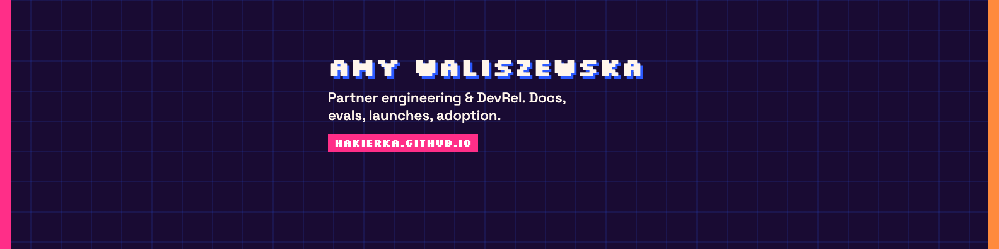

Kit for Canva + LinkedIn
Same sentence everywhere. If one surface still says “Web3 advocate who scales your project”, it is wrong.
Colours
Type: Silkscreen for name / buttons. Space Grotesk for body. Hard 3px borders, offset shadows, no gradients, no soft grey SaaS.
Banner (1584×396). Text sits on the right so the LinkedIn avatar does not cover it. Download.


Photo: photos/face-cup.jpg or photos/face-garden.jpg.
Headline (CV + LinkedIn)
Partner Engineering & Developer Relations Leader Stockholm · hakierka.github.io
One line
I get people from “we bought the model” to “we actually use it.”
About / CV summary — paste this
Developer Relations and partner engineering, ten years in tech, eight of those in DevRel. Docs, evals, launches, workshops, and the adoption work that actually moves usage. Former software engineer (JavaScript, TypeScript, Python). Currently QA owner for EQT’s internal LLM tools (Tally and Iris, ~2,000 people): first research pass, 16 segments, 190 AI Champions, findings into the engineering roadmap. Before that: DevRel lead for Storacha (Protocol Labs) through a full rebrand and Bangkok launch; Chromia 20K→120K Twitter, organic; Concordium Academy; Cudos mainnet. VP of Geek Girls Carrots (250,000 members). I write, I speak, I ship small public analogs when the real traces are under NDA: liveops-evals, who-uses-this, docs-the-agent-can-read.
Featured on LinkedIn (order)
1. hakierka.github.io 2. github.com/hakierka/liveops-evals 3. github.com/hakierka/who-uses-this 4. github.com/hakierka/docs-the-agent-can-read 5. TIME piece on Queers for Ukraine 6. One Medium post (ComfyStream or the docs essay)
Canva CV, keep / kill
KEEP - Partner Engineering & Developer Relations (not “Growth Manager”) - EQT block with the numbers (13 / 480 / 16 / 190) - Storacha, Chromia, Concordium, Carrots - Portfolio URL hakierka.github.io, GitHub hakierka - One photo: face-cup or face-garden KILL - “open to work and scale your project” - Web3 as the only identity - Serverpod / Flutter as a headline - Icon rows of 30 tools - The old Notion bit.ly COLOURS IN CANVA Pink #FF2E88, blue #2B59FF, orange #FF8A3D, ink #190B33, paper #F4EEFF. If Canva does not have Silkscreen, use another pixel/mono heading. Body: something geometric (Montserrat is fine, Inter is fine). No thin grey script.
GitHub pins
liveops-evals who-uses-this docs-the-agent-can-read hakierka.github.io